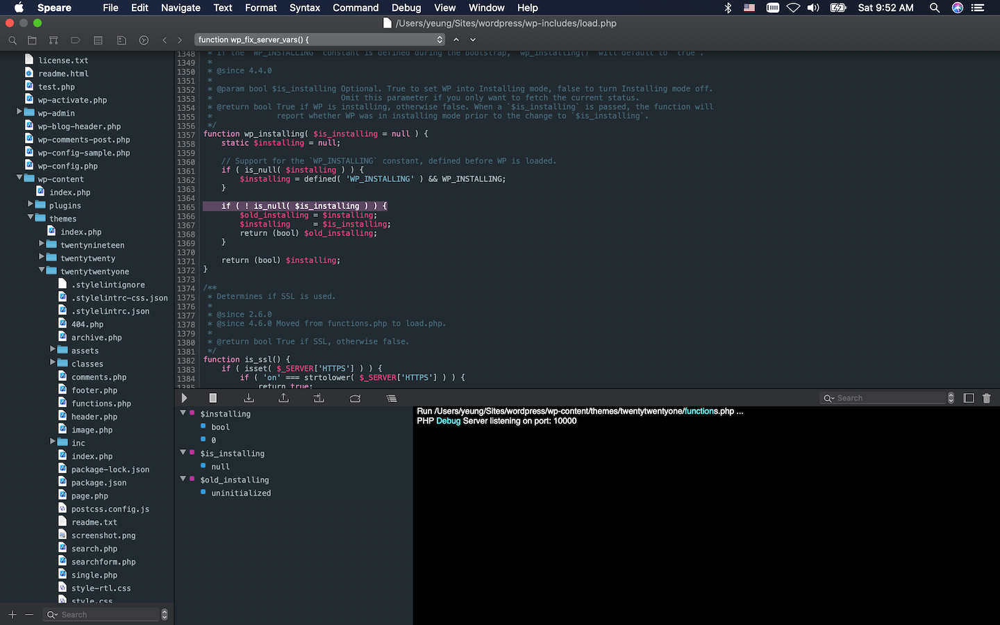

____
/ __/ __ ___ ___ ___ ___
_\ \/ _ \/ -_) _ `/ __/ -_)
/___/ .__/\__/\_,_/_/ \__/
/_/
Speare v1.2.344
The ultra light code editor.
(c) 2021 http://www.sevenuc.com
Speare is a small and friendly code editor. You can use it to edit source code files, programming and debugging. It designed to make programming feels light, simple and free. Speare not only has an efficient code navigation and call routines tracing ability but also has flexibility to extend it to support special developing requirements. Speare code editor includes an ultra lightweight debugging environment for C, C++, Ruby, mruby, Lua, Python, PHP, Perl and Tcl, and give people complete freedom to control and customise the debugging environment for a new programming language.

If you can't open the link above, please launch App Store and found
Screenshot of LLVM in Speare code editor.
Debug Mode
1. Click main menu "Navigate" → "Toggle Output", to show the debug toolbar.
2. Debug toolbar:
From left to right, Start, Stop, Step Into, Step Out, Run To, Step Over, Show Watches. The "Step Over" is equals to "Step next", and "Step To" is equals to "Continue" in common debugging words, and the "Step To" is the command that tell the debugger run to meet a breakpoint or an exception occurred or the program meet exit. On the rightmost there are three other function units, they are, search items in the stackview, siding stackview, and clean debug output.
Search in the debug output: click in the output area and use the shortcut key "Control + F" to do the searching.
3. Socket port:
You can set the socket communication port number both used by Debug Server and the Speare code editor. Open the Preferences of Speare and select the "Debug Settings" tab then input your number.
Please remember to empty the port number when you switched to debugging with the default builtin programming languages with default port number.
4. Watches:
Watches used to evaluate variable or expression and their values can be real-time showing in stack-view when debugging session paused, the nodes normally has a green colour and always placed on the top of stack-view.
- Please ensure all source files have been dragged in the left side Treeview (Workspace Explorer) before start a debug session, because macOS app can't be allowed to access files outside of its sandbox.
- When your source code file moved to another folder, you must drag the source code folder in Speare again then the debugging can correctly work.
Debugger Architecture
Proposed debugging environment support in Speare code editor are: GDB, LLDB, Ruby, mruby, Lua, Python, Perl, PHP, Tcl, Node.js, Java, Dart, AWK and shell. Speare code editor provides very concise and simple interface to add new programming language in it, end user can very easily write a new programming language parser, syntax highlighting, code formatter and debugger for it.
Debugging code with Speare code editor
Speare code editor provides an intuitive debugging environment allows adding breakpoints and the execution flow can be viewed and controlled and has the abilities that an IDE debugger will give you over trace execution in code, view the call stack at any point in time, giving you a context for your current stack frame, step into libraries or sub modules that you want to tracing the debug symbols, and change variable values while the program is running. It provides simple interfaces that can be integrated with any command line tools without boring configuration, giving you the flexibility you need to debug code at hand. The debuggers of Speare code editor, the source-level debuggers, helps you step through the code line by line and observe the runtime behaviour of your program and got a better understanding of your code.

Screenshot of debugging WordPress in Speare code editor.
Ruby Debuggers
Speare supports debugging all kinds of Ruby development, mruby/c and mruby, Ruby and Ruby on Rails, please refer this document http://www.sevenuc.com/download/Small_IDE_for_Ruby_development.pdf.
mruby Debuggers for mruby, the lightweight Ruby VM:
mruby_debugger_2.0.1.tar.gz (362KB) for mruby 2.0.1
(SHA256: 203cab73bd11a4996c6909be2ce5ceae7e3c6cc61708b4bef362ca0586495c45)
mruby_debugger_2.1.0.tar.gz (370KB) for mruby 2.1.0
(SHA256: 7e2b9e2818c7aa897d3624acd7aa564369e1cfce603e984c2b7ab632709054a9)
mruby_debugger_2.1.2.tar.gz (368KB) for mruby 2.1.2
(SHA256: cd4872c99436d0feb603e052c37380a46030fcfcab0707da28980359c2987edb)
mruby_debugger_3.0.0.tar.gz (440KB) for mruby 3.0.0
(SHA256: f6f47a6bcf94390c950a9902f15f3d34c3295125d1dcca47f27c6d682f3ccef6)
About Software Industry
They obviously know a technology is garbage, a project shouldn't be started, but they don’t have enough courage to admit the mistake, correct the mistake, cancel the project and abandon that technology. On the contrary, they not only want to recover their cost, they even drag customers into big mud puddle and even promote their big lies to make money.
About the C programming language
Common pitfalls of C programming:
- Unfreed memory
- Memory leak
- Infinity loop
- Unclosed file handle
- Exceeded array border access
- NULL pointer
- Invalid void pointer casting
- Uninitialized variables
- Uncaptured error handling
- Not validating user input
- ...
C is not safe but it is the strongest programming language and the most strongest softwares were written with it, including operation system and the most important infrastructure of internet and software industry, think about BIND, Apache, Nginx, MySQL, PostgreSQL, SQLite, Berkeley DB, Redis, Memcached, PHP, Perl, Ruby, Python, Lua, Git, FFmpeg and other countless excellent softwares. If sqlite and git were written with C++ or Java, I'll throw them away immediately. C is top professionals' language, a mature developer may needs ten years to really write software with it. The product quality of the software industry is directly proportional to the number of experienced C programming experts.
The Tao and Kung Fu of Programming
Why all attempts failed? They want to create new programming language to resolve problem in software industry, but all attempts failed. Any new programming language that intended to achieve a seamless translation from Lisp (or Lisp like language, e.g Javascript) to native executable code will failed at final. The product quality of the software industry is directly proportional to the number of experienced C programming experts, but experienced C developer and C ninja are rare and rare, because only a few people can walk on this difficult way. C is really unsafe and really difficult to master, to be a mature C developer or an C expert, a developer may needs about ten years to continually experience it. Programming is difficult, there is no shortcuts for programming, programming language itself can't resolve it. Programming in C++ is not essential, but mast how to OOP in C++ is essential, there's no any other language can replace the importance of it and no any shortcut to bypass OOP with it, master OOP in C++ and then you can better programming in other high-level languages. Only the honest and continuous improving of the skills of OOP is the reliable way. Only the honest and continuous improving of the skills of C programming is the reliable way.
"C + elegant scripting language" is the reliable, efficient and flexible extending solution.
If you can't write quality C code, that means you're not a real programmer. Most developer have never written a real C software in their life,
Crafting software as small as possible!